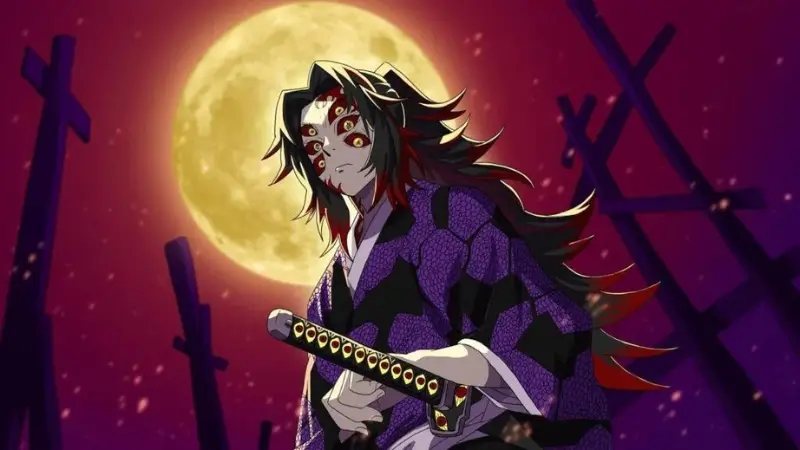
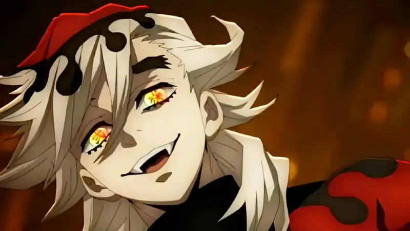
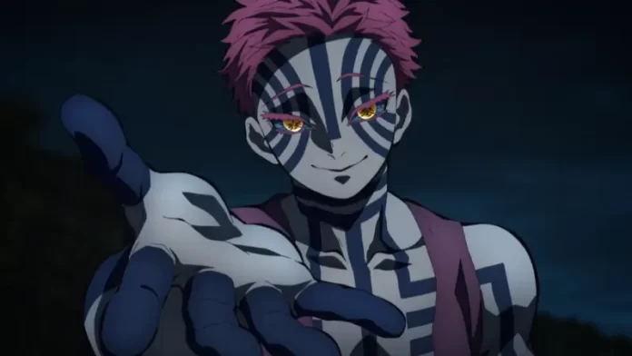
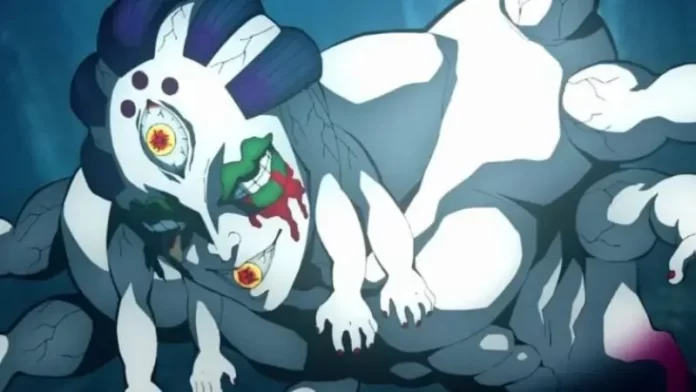
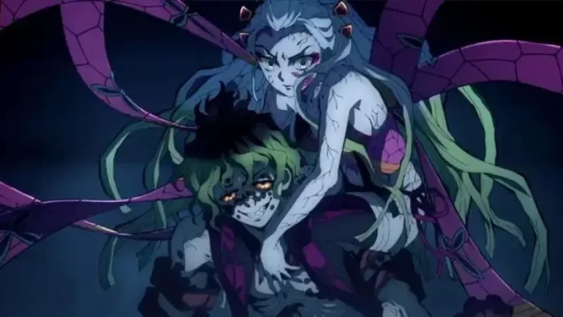

Sobre os Luas Superiores
- Kokushibo é o mais poderoso das Luas Superiores. Originalmente um espadachim humano, ele se transformou em um demônio e manteve suas habilidades excepcionais com a espada. Ele tem uma presença intimidadora, com múltiplos olhos que lhe permitem perceber o ambiente e os movimentos dos oponentes com precisão letal. Sua técnica de respiração é a “Respiração da Lua”, uma das mais avançadas e devastadoras.
- Doma é um demônio carismático e mortal, conhecido por sua devoção absoluta a Muzan Kibutsuji. Ele é cruel e desprovido de emoções genuínas, o que o torna especialmente perigoso. Doma usa técnicas baseadas no gelo para atacar seus inimigos, congelando-os e quebrando-os com facilidade. Sua fachada amável esconde sua verdadeira natureza sádica.
- Akaza é famoso por sua força bruta e habilidades de combate corpo a corpo. Ele tem um código de honra particular, respeitando aqueles que considera fortes. Akaza utiliza técnicas de artes marciais aprimoradas pela energia demoníaca, fazendo dele um oponente formidável em batalha. Sua busca incessante por um adversário digno demonstra seu desejo de testar e superar seus próprios limites.
 Hantengu possui uma habilidade única: ele pode se dividir em várias entidades menores, cada uma representando uma emoção diferente. Isso o torna extremamente difícil de derrotar, pois cada uma dessas entidades tem suas próprias habilidades e personalidades. Sua habilidade de multiplicação permite ataques coordenados e confusos, criando um desafio significativo para seus adversários.
Hantengu possui uma habilidade única: ele pode se dividir em várias entidades menores, cada uma representando uma emoção diferente. Isso o torna extremamente difícil de derrotar, pois cada uma dessas entidades tem suas próprias habilidades e personalidades. Sua habilidade de multiplicação permite ataques coordenados e confusos, criando um desafio significativo para seus adversários.
- Gyokko é um demônio com uma aparência bizarra e uma obsessão por arte macabra. Suas habilidades permitem que ele manipule e crie vasos de cerâmica a partir de seu próprio corpo, de onde ele pode invocar criaturas monstruosas. Gyokko valoriza a estética de suas criações, muitas vezes mais do que a própria eficácia em combate, o que reflete sua mentalidade distorcida.
- Daki e Gyutaro são irmãos que compartilham a posição de Lua Superior Seis. Daki é uma demônio bela e mortal, que usa suas faixas afiadas como armas. Gyutaro, seu irmão mais velho, possui habilidades venenosas e uma resistência tremenda. Juntos, eles são um desafio formidável, combinando suas habilidades para criar estratégias de combate devastadoras.